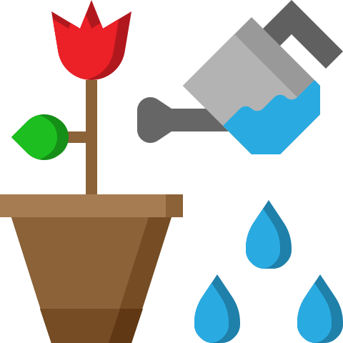
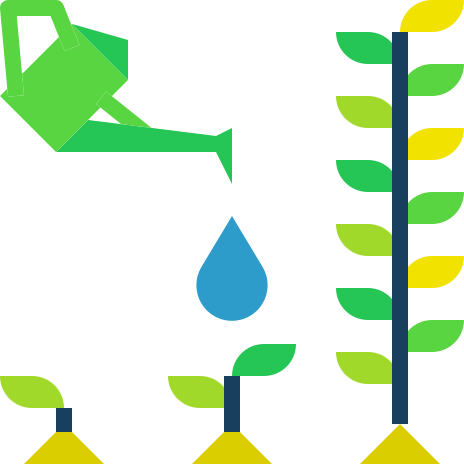
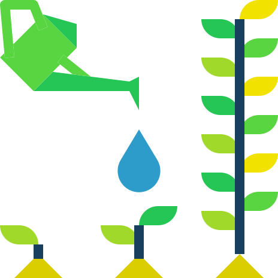
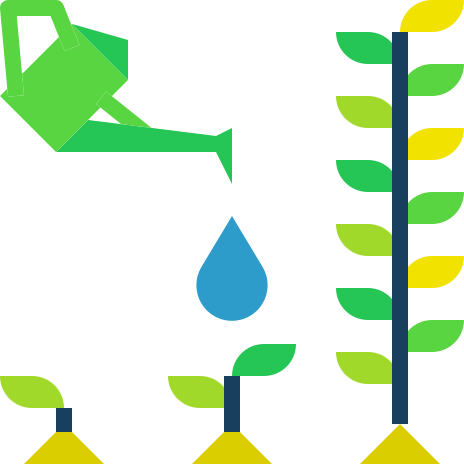
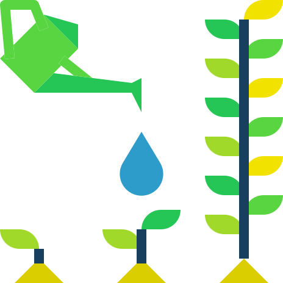
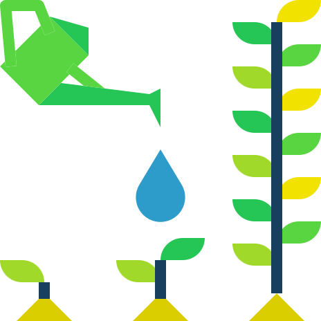
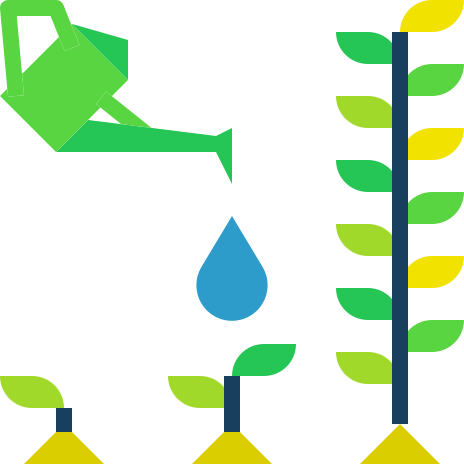
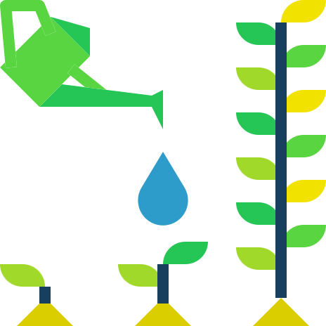

Fairway Greenhouse
Resources
Home
About Us
Our Plants
Resources
Contact Us


Watering Guides
ProFlowers
Water It Wisely
Light Guides
House Plant Experts
My City Plants
Feeding Guides
Love the Garden
Sunset Magazine
 



 
